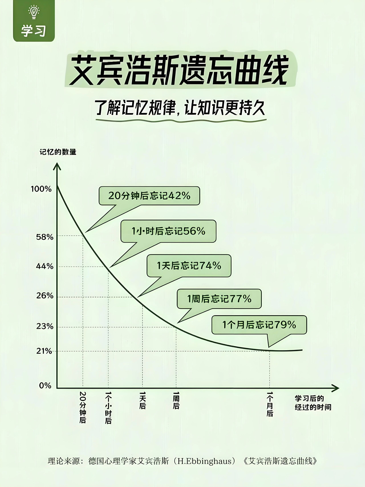
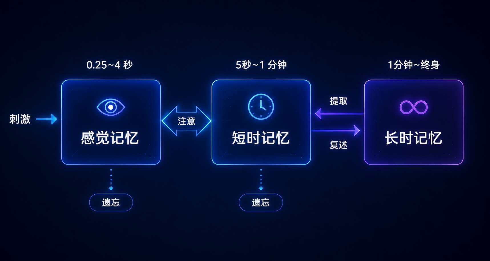
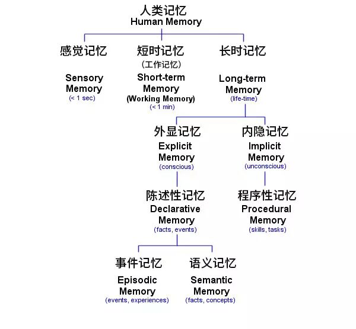
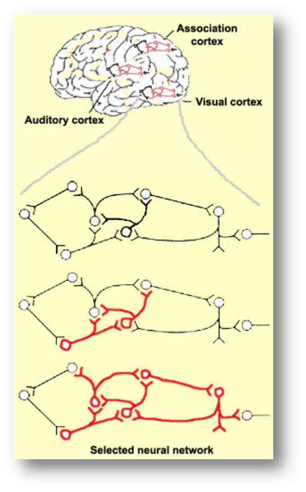
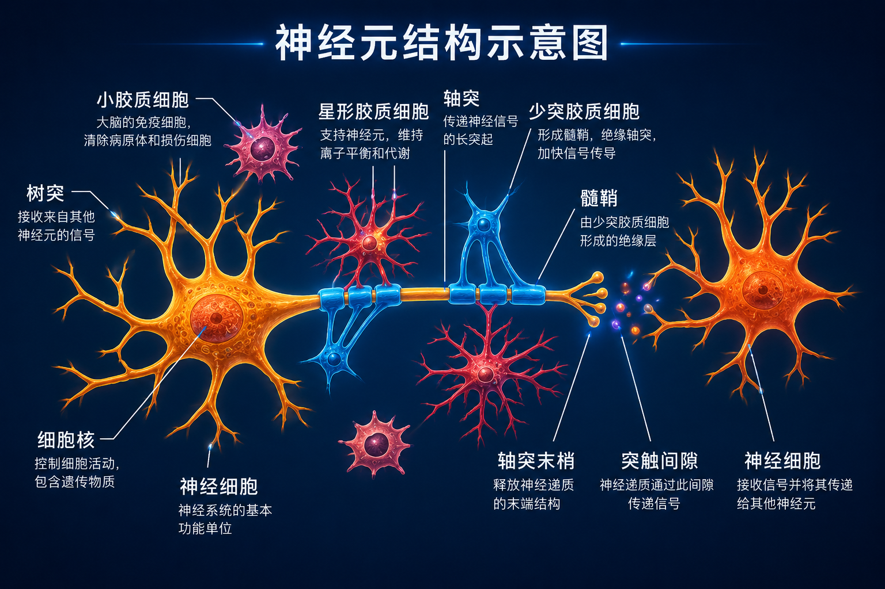
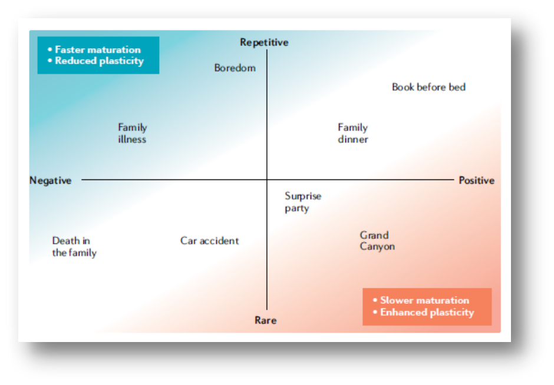
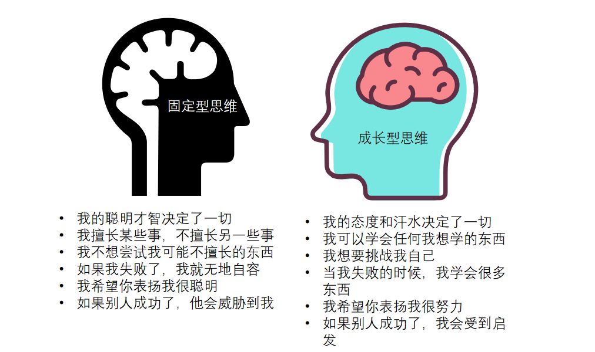
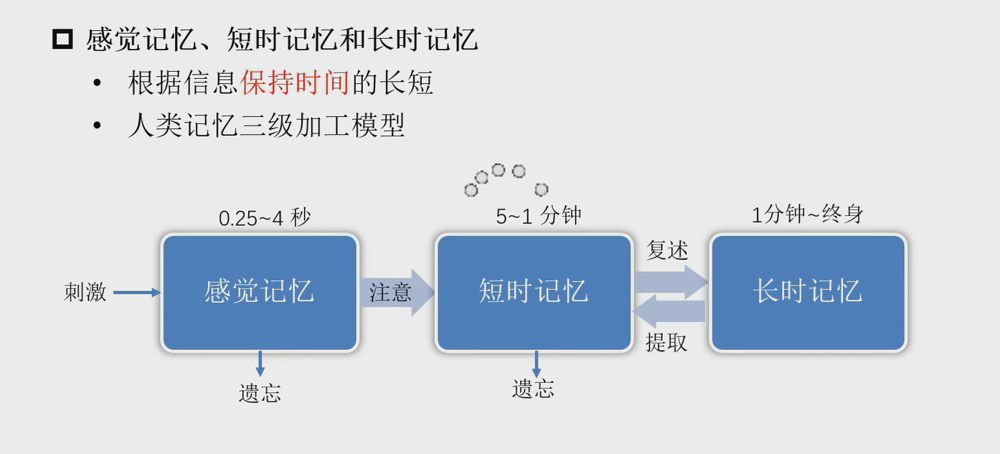
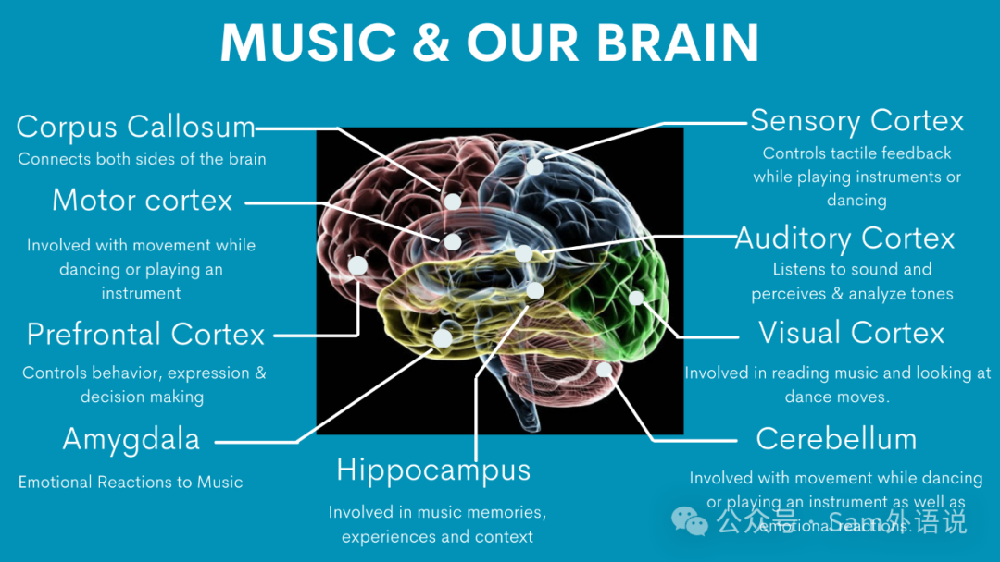

感觉记忆
持续时间极短
作用：筛选信息
Brain & Mind Literacy
从脑科学看学习与成长
Take-home Message：认识记忆，是学会学习的第一步。
Opening Questions
遗忘不是突然发生的，而是有规律的。

今天，我们将从脑科学寻找答案。
Class Activity
为什么有人记得更多？
引出：工作记忆Take-home Message：记得多少，和工作记忆及策略有关。
Memory Process

真正学会，是知识进入长时记忆。
Three Systems
持续时间极短
作用：筛选信息
容量有限
作用：思考、理解
保存时间长
作用：真正掌握知识

Take-home Message：有效学习，要照顾大脑的容量限制。
Working Memory
不是你笨，而是工作记忆容量有限。
引出：认知负荷理论Take-home Message：学习困难有时来自认知负荷过高。
Better Memory
不断问：为什么？
把概念讲给别人听不要一天学完
每天学一点不要一直看答案
要不断回忆学习方法比学习时间更重要。
Learning Essence

Take-home Message：学习的关键，是让知识产生联系。
Neural Connection
学习不是把知识放进脑袋，而是神经元之间建立新的连接。

Take-home Message：能力提升的背后，是连接被反复激活。
Case Study
The Brain Changes With Learning.
Plasticity
每一次学习，都是一次大脑重塑。

Childhood Brain
Take-home Message：早期经验，会为未来学习打下基础。
Practice Changes Brain
控制左手的大脑区域明显扩大
重复练习能够强化神经连接。
Mindset

Take-home Message：把“不会”改成“还不会”。
For Teachers
“你好聪明。”
“你的方法很好。”
“你的努力值得肯定。”
“继续坚持。”
关注努力与策略，而不是天赋。
Learning Tips

Take-home Message：会学习，就是会设计自己的大脑训练。
Music & Brain

Take-home Message：合适的声音环境，可以成为学习的助力。
AI Era
存储知识
快速检索
回答问题
理解
思考
创造
迁移
AI可以帮助记忆，但无法替代思考。
Summary
Every Brain Can Grow.